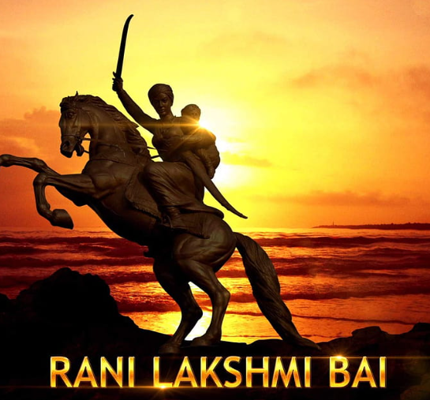

The Indomitable Spirit of Freedom
In the pages of India's tumultuous history, one name shines with an undying radiance - Jhansi Rani Lakshmibhai.
Born as Manikarnika on November 19, 1828, in Varanasi, she grew up to be an epitome of bravery, resilience, and the undying
spirit of freedom.
Lakshmibhai's early life was marked by tragedy, losing her mother at a tender age and being raised by her father, Moropant Tambe,
who instilled in her a sense of pride in her Marathi heritage. At the age of fourteen, she was married to Raja Gangadhar Rao of
Jhansi, making her the Queen of the princely state. Despite the regal title, she remained humble, compassionate, and deeply connected
to her subjects.
Her life took a fateful turn in 1853 when Raja Gangadhar Rao passed away, leaving behind a young adopted son, Damodar Rao. The British East India Company, taking advantage of the lack of a direct heir, attempted to annex Jhansi under the Doctrine of Lapse. But, Lakshmibhai, refusing to bow to colonial injustice, fiercely defended her right to rule, showing the world her unwavering determination to protect her people's sovereignty.
The Siege of Jhansi in March 1858 became the defining moment of her legacy. As the British forces advanced, she refused to surrender her beloved Jhansi, choosing to fight until her last breath. Displaying exceptional military prowess, she fearlessly led her troops in a series of fierce confrontations. Her audacious spirit inspired her warriors to fight for their homeland, sparking hope in the hearts of countless Indians yearning for freedom
Though Jhansi ultimately fell to the British, Lakshmibhai's defiant resistance inspired rebellions in neighboring regions. She continued her struggle, joining forces with other leaders like Tantia Tope and Rao Sahib, making the British forces wary of her tactical brilliance.
In June 1858, Lakshmibhai's fight for freedom reached its pinnacle during the Battle of Gwalior. Mounted on her trusted horse, Sarangi, she bravely charged into the enemy ranks, even after her horse was shot from under her. In the face of overwhelming odds, she valiantly fought on foot, refusing to retreat until the very end.
Her indomitable spirit, however, could not defy destiny. On June 17, 1858, the warrior queen succumbed to her injuries, but her legacy did not die with her. Lakshmibhai's name became synonymous with the struggle for freedom and the strength of a united India.
Today, her memory lives on as a symbol of courage, patriotism, and resilience. Jhansi Rani Lakshmibhai's sacrifices continue to inspire generations of Indians to cherish their heritage and uphold the values she epitomized.
In the hearts of her people, she will forever remain the Warrior Queen of Jhansi, a beacon of hope in the darkest of times, and a guiding light for those who dare to stand against injustice and tyranny. As we pay tribute to her, let us never forget the price she paid for India's freedom and strive to uphold the principles for which she laid down her life. Jhansi Rani Lakshmibhai, the embodiment of bravery, shall live on in the heart of our nation, inspiring us to be fearless and unwavering in our pursuit of truth and liberty.